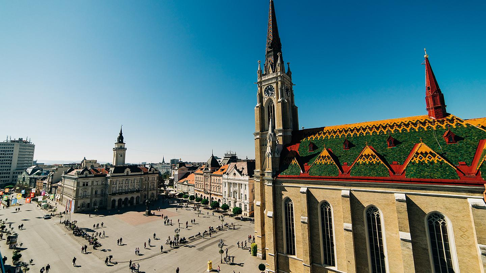
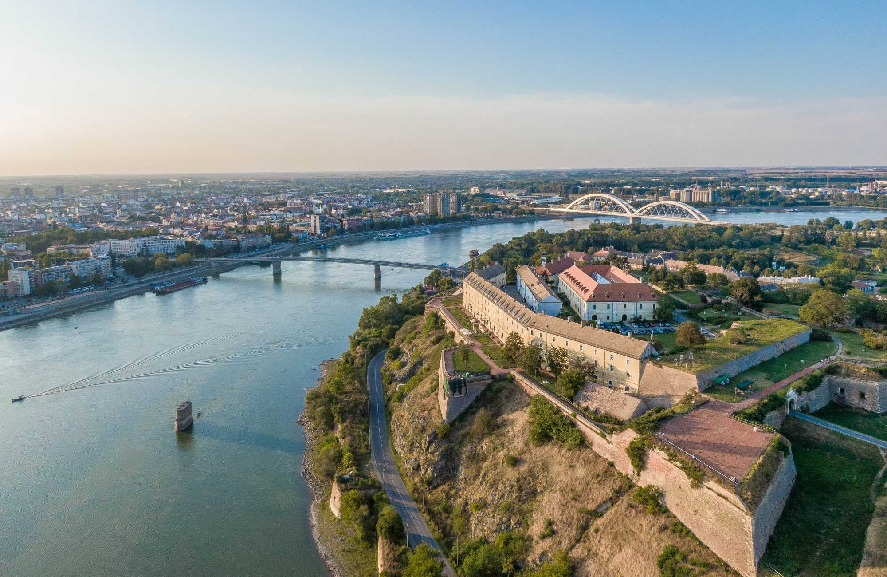

 Нови Сад је највећи град Аутономне Покрајине Војводине и њен административни центар, после Београда други град у Србији по броју становника и површини.
Према последњим резултатима пописа становништва из 2011. године, на административној територији града Новог Сада је живело 341.625 становника.
Основан 1694. године, Нови Сад је дуго времена био центар српске културе, због чега је често називан Српска Атина. Данас је Нови Сад велики индустријски и финансијски центар српске економије,
универзитетски град и школски центар, културни, научни, здравствени и политички центар Аутономне Покрајине Војводине, град домаћин многих међународних и домаћих привредних, културних, научних и спортских манифестација,
као и град музеја, галерија, библиотека и позоришта.
.
Нови Сад/Újvidék/Neusatz је већ три века, колико постоји под тим именима, простор разноликог, богатог културног наслеђа многих народа који у њему живе. Материјална и нематеријална културна баштина стварана у прошлим вековима основ је на коме почива интерактивна мрежа научних и културних институција, што Нови Сад данас чини простором активног сусрета култура и различитих идентитета.